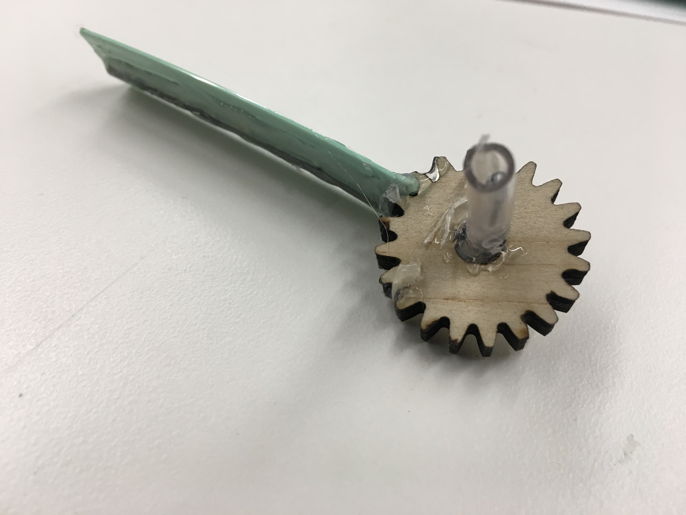
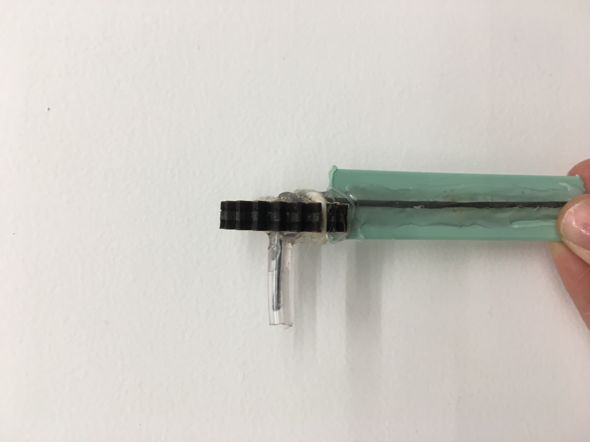

Kinetic Sculpture
This week I was inspired by two machines I have seen in the past few weeks: 1) four "fingers" tapping metal plates like a piano and 2) a project by Rob of a doll hand hitting a steel sheet. I wanted to make a kinetic sculpture that can be controlled by a user to move different materials arranged horizontally along a limited rod that will then be struck by an motor-controlled spinning instrument. The rod can then be shifted so that the striking instruments hits the different materials, each producing its own sound.
I used translucent acrylic to make the box so that the inside can be seen when controlling which material gets struck.
The dc motor is placed on the platform above so that it is held stably in place.
 
The hitting instrument was attached to a motor via rubber tubbing, which gives flexibility. This also allows for easy assembly for instances such as changing the motors.
Specifics of the hitting instrument: a thin metal rod attaches the gear to a 1 cm-thick piece of green plastic for more surface area. This was attached with hot glue.

I sawed off a 25 cm piece of wooden rod, and created a cardboard holder. The ends of the wooden stick have rubber tubing to limit the range of motion and
prevent unnecessary movement.
Two steel plates (one with cardboard attached to the back) and a cardboard piece are glued along the rod to provide a range of sounds (medium, low, high respectively).
They were attached with a combination of hot glue and thin metal wire. Due to limited time, scott tape was also used to provide a bit more stability and avoid detachment / rotational movement.

The end goal was to make a musical kinetic sculpture.